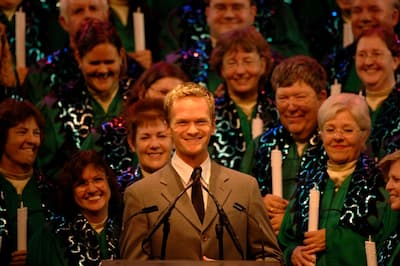

By Valentina
19 Marzo 2022
Conoscere il calendario degli eventi a Walt Disney World è una cosa importantissima per pianificare la vacanza perfetta. Io e Davide di Parks and Fun abbiamo unito le forze per fornirvi la lista più dettagliata possibile.
In questo video troverai gli eventi più importanti della prima metà dell'anno: da weekends interamente dedicati alle maratone, al Dapper Day...non vi svelo altro! Buona visione!
MAY THE 4TH BE WITH YOU! Il 4 maggio da moltissimi anni il giorno di star wars nei parchi Disney. Il festival è iniziato addirittura nel 1997 e proseguito fino al 2015. Ogni anno si teneva lo Star Wars Weekend in cui attori dei film, a volte anche george lucas in persona apparivano agli hollywood studios per questa ricorrenza. Il 2015 dopo l'annuncio della costruzione di Galaxy's Edge, lo Star Wars Day è stato cancellato ufficialmente ma il 4 maggio è ancora una data calda che va sold out abbastanza in fretta: nessuno vuole perdere l'occasione di festeggiare star wars day direttamente davanti al millennium falcon, nonostante disney non faccia piu celebrazioni in grande stile come in passato, ci sono sempre sorprese che avvengono in quel giorno.
Occhio alle Parks Reservations per gli Hollywood Studios in questo giorno! Vanno sold-out molto velocemente!
Ogni anno all'inizio di Giugno, ovvero il mese del Pride, si tiene un grande evento organizzato addirittura fin dal 1991 in cui membri della comunità LGBT ma anche famiglie, supporters e chiunque voglia partecipare si raduna nell'area di Orlando per una settimana di eventi per poi concludere le loro vacanze con una giornata al Magic Kingdom. Chiaramente nel corso degli anni questa tradizione è sempre più organizzata, ci sono ora, come per il dapper day pacchetti vacanza offerti dall'organizzazione proprio per questo evento. Come dicevo ci sono un sacco di attività e gruppi specifici, per esempio per famiglie con figli LGBT+, singles e così via. Nonostante Disney non organizzi l'evento direttamente, chiaramente lo supporta, e ne trae in qualche modo anche profitto dato che si è stimato che il primo sabato di Giugno la tradizione di andare a Walt Disney World sia seguita da almeno 20-30 mila persone parte della comunità LGBT+ ed è destinata a crescere nei prossimi anni. Più info nel sito ufficiale (in EN)
Terzo (e più grande) festival ad EPCOT, tutto dedicato al cibo e al bere. Questo è anche il festival che copre più mesi dell'anno e molto spesso si prolunga fino all'inizio delle feste di Natale. Parte del Food and Wine Festival, è la mezza maratona: infatti l'arrivo di questa mezza maratona è dentro EPCOT e la cosa esclusiva è il party dopo gara dove chiaramente si mangia e si beve (party incluso nel ticket della gara) + accesso speciale in molti ride di EPCOT.
Tutti eventi a pagamento che si aggiungono alla normale offerta dei parchi. Che siano eventi di Halloween o di Natale poco importa: iniziano nel tardo pomeriggio e vanno avanti fino a notte inoltrata in un Magic Kigndom poco affollato, con molte attrazioni aperte ma soprattutto molto intrattenimento (e snacks) esclusivo. Gli eventi si tengono alcune sere a settimana: tutti gli anni viene rilasciato un calendario speciale: Halloween inizia ad Agosto, Natale a Novembre. I prezzi variano a seconda della vicinanza alla festività.
Ultimo festival dell'anno, tutto dedicato al Natale e alle feste. L'intrattenimento è diverso dagli altri festival, distribuito in tutti i padiglioni con storytellers che raccontano le tradizioni del natale nei vari paesi - nel padiglione italiano si può incontrare la befana.  Poi un evento che si ripete ogni anno è la processione delle candele (candlelight processional) tradizione che è iniziata addirittura ai tempi di Walt a Disneyland e poi portata ad EPCOT. È una vera e propria processione di candele che si conclude con uno spettacolo corale e un narratore vip che racconta la storia del Natale. Negli anni ci sono stati veri e propri VIP come Whoopi Goldberg e Neil Patrick Harris.
Tutto concentrato a Magic Kingdom ed EPCOT che chiudono all'una di notte, entrambi i parchi hanno di solito i fuochi d'artificio poco prima della mezzanotte. Il consiglio è arrivare presto nei parchi perché nel corso della giornata diventano sold-out e non è più possibile entrare. In alternativa ci sono talvolta altri party nei resort o in alcuni ristoranti dei resort, ma invece Disney Springs chiude alle 11:30.
VISITA IL MIO ONLINE SHOP!
Magliette, adesivi e tanto altro, tutti dedicati al mondo dei parchiSe quest'articolo è stato interessante, non dimenticarti di seguirci sul podcast “Aperitivo a Main Street, U.S.A.”, disponibile su Spotify, Anchor e tutte le altre maggiori piattaforme audio!